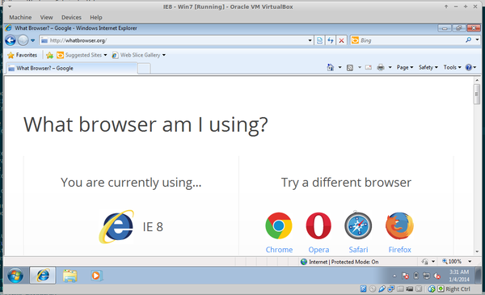
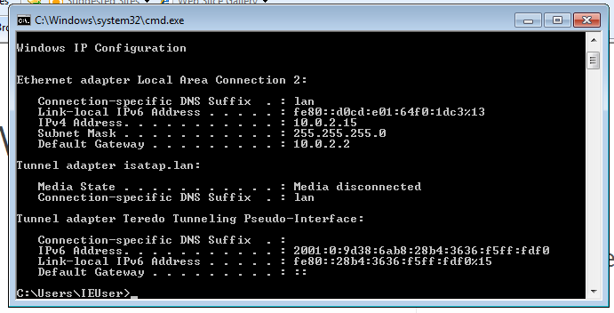

As every web developer knows, debugging your website requires testing it on different browsers. Every browser (or at least every rendering and Javascript engines) is different in the way it parses and presents web pages. Different implementations of web standards have different bugs, different ways of presenting a layout and require the developer to be aware of their own unique quirks. Although the most recent versions of browsers have better compliance with web standards, and there is a better uniformity in the way browsers render web pages; there is still a large percentage of users using older versions.
JS and CSS frameworks and libraries usually handle browser differences for us and provide a consistent interface, but manual adjustments are usually required. Testing on different browsers ensures us that our application works as expected for all our users.
But this post is not about the differences between browsers, which are just a fact; it's about one specific problem many developers who work on Linux face - how to debug and test on Internet Explorer, when you can't even run it on your system.
Most of us know the "screenshots" websites, which provide a screenshot of how a website looks on different browsers. But this has never worked well for me, for two reasons:
One solution is to dual boot your system with Windows. But this does not allow you to work on your code while testing. You have to stop your work, reboot your system, do your tests (sometimes you just want to see how a page looks like on IE) and reboot again. This is a hassle. And also, you need a Windows license.
The most viable solution, at least for me, is to run Windows on a virtual machine using Virtual Box. Microsoft releases Windows' VMs with different versions IE just for this purpose. After installing Virtual Box, running the VMs is easy. Just follow the download instructions, extract the archive and import the VM image into Virtual Box.

Default VM settings should be sufficient to enable network access. The default
settings use the NAT protocol to connect the virtual machine to the Internet.
In this case your Linux system will serve as the VM's default gateway. If you
run a local development server on your Linux system, you may access localhost
from the virtual box using the default gateway's address. Just run ipconfig
from Windows' command prompt to find what it is.
